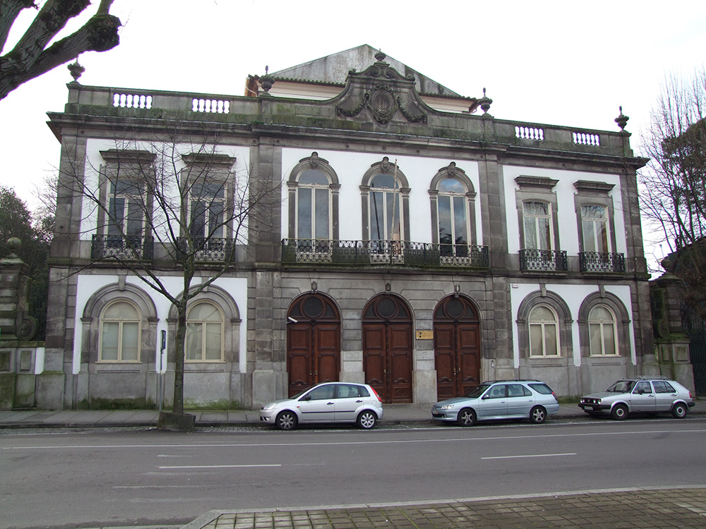

A Faculdade de Belas Artes da Universidade do Porto (FBAUP) é um estabelecimento de Ensino Superior da Universidade do Porto dedicada ao ensino das Belas Artes.
Situada a alguns minutos da Baixa do Porto, a Faculdade de Belas-Artes ocupa um antigo palacete do século XIX em cujos jardins se construíram, na década de 1950, edifícios de interesse arquitectónico, especialmente concebidos para o ensino das disciplinas tradicionais das Belas-Artes.
Av. Rodrigues de Freitas, 265
4049–021 Porto
Portugal
—
Telefone +351 225 192 400
Fax +351 225 367 036